ggplot(boats,aes(x=price))+geom_histogram()`stat_bin()` using `bins = 30`. Pick better value with `binwidth`.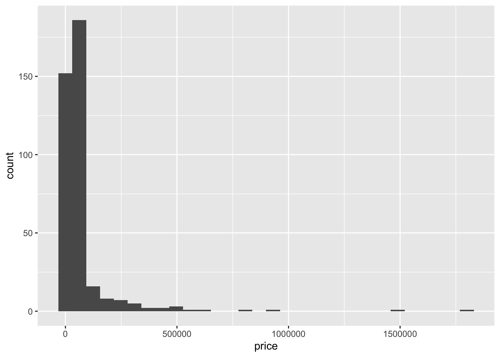
Answer:
id: Identifier
type: Categorical variables
boatClass: Categorical variables
year: Categorical variables
condition: Categorrical
length_ft: Quantitative
beam_ft: Quantitative
dryWeight_lb: Quantitative
price: Quantitative
sellerId: Identifier or categorcial
Answer:
Links:https://www.boatsetter.com/boating-resources/things-to-know-before-buying-a-boat#:~:text=Some%20of%20the%20steps%20you%20should%20take%20when,doing%20a%20full%20inspection%2C%20and%20closing%20the%20deal. https://www.boats.com/boat-sellers-guide/boat-prices-and-boat-values/
Links: www.imdb.com/name/nm0696975/ https://www.bing.com/ck/a?!&&p=ef0d97b18ac9d136JmltdHM9MTcxMTQ5NzYwMCZpZ3VpZD0zMWQ0Yzk4YS02M2I4LTY4MjktMWJhMy1kZDg4NjI5MTY5Y2YmaW5zaWQ9NTI2Nw&ptn=3&ver=2&hsh=3&fclid=31d4c98a-63b8-6829-1ba3-dd88629169cf&psq=cruiser+boat+price&u=a1aHR0cHM6Ly93d3cuYm9hdHMuY29tL2JvYXRzLWZvci1zYWxlLz9tYWtlPWNydWlzZXJz&ntb=1
Answer
ggplot(boats,aes(x=price))+geom_histogram()`stat_bin()` using `bins = 30`. Pick better value with `binwidth`.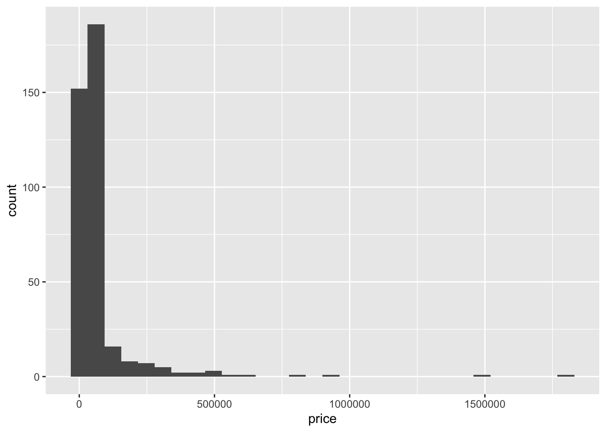
1) It surprised me. Most of the price are below 500000 USD while there are a few outliers with extremely expensive price.
2) Median. The mean of these data is profoundly affected by outliers and thus being unable to represent the whole dataset while the median is not.
3) ↓
boats_price_summa <- c(min = min(boats$price),
Q1 = quantile(boats$price, 0.25),
median = median(boats$price),
Q3 = quantile(boats$price, 0.75),
max = max(boats$price))
kable(boats_price_summa,col.names="Values",caption = "<b>The 5 number summary of boat price</b>")| Values | |
|---|---|
| min | 519.0 |
| Q1.25% | 19995.0 |
| median | 35680.0 |
| Q3.75% | 59947.5 |
| max | 1799900.0 |
4) ↓
standard_deviation<-sd(boats$price)
standard_deviation[1] 153042.5coefficient_of_variation<-standard_deviation/mean(boats$price)
coefficient_of_variation[1] 2.136164The standard deviation is around 2.14 times larger than the mean. There is a significant variation among the price of the boats.
5) It would benefit from transformation. I removed the boats which are unnecessarily expensive. Those extremely expensive prices are special cases and don’t have much reference value. Since Q3 for the price data is around 6e+4, I first set the maximum price (6e+4)/(3/4)=8e+4 but found it too low. Then, by examine the histogram for boats cheaper than 7.5e+5, I selected 1.5e+5 as the boundary for disposed values and retained values.
filtered_boats<-boats%>%
filter(price<150000)
ggplot(filtered_boats,aes(x=price))+geom_histogram(binwidth = 10000)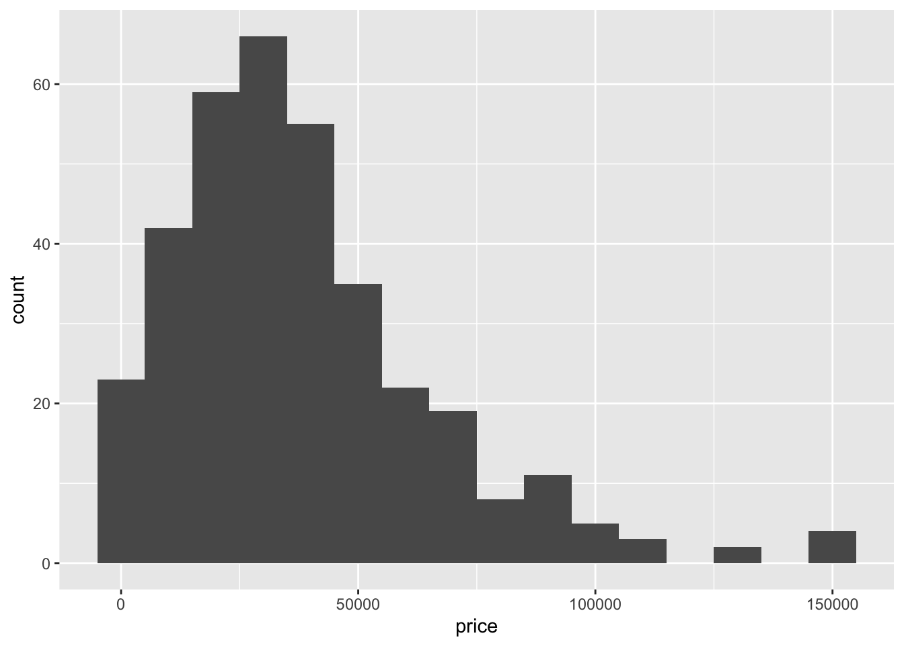
6) ↓
ggplot(filtered_boats,aes(x=condition, y=price))+geom_boxplot()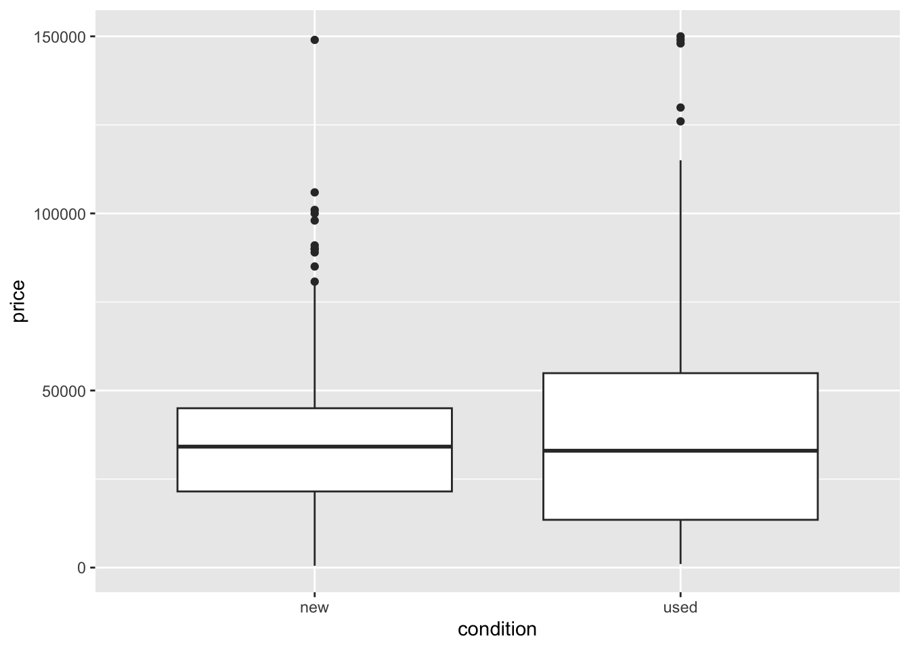
Answer:
1)
fuel.type.table <- table(factor(boats$fuelType), factor(boats$year))
kable(fuel.type.table)| 1950 | 1963 | 1970 | 1971 | 1973 | 1975 | 1976 | 1977 | 1980 | 1981 | 1984 | 1985 | 1986 | 1987 | 1988 | 1989 | 1990 | 1991 | 1994 | 1995 | 1997 | 1998 | 1999 | 2000 | 2001 | 2002 | 2003 | 2004 | 2005 | 2006 | 2007 | 2008 | 2009 | 2010 | 2011 | 2012 | 2013 | 2014 | 2015 | 2016 | 2017 | 2018 | 2019 | 2020 | |
|---|---|---|---|---|---|---|---|---|---|---|---|---|---|---|---|---|---|---|---|---|---|---|---|---|---|---|---|---|---|---|---|---|---|---|---|---|---|---|---|---|---|---|---|---|
| 0 | 0 | 0 | 0 | 0 | 0 | 0 | 0 | 0 | 0 | 0 | 0 | 0 | 0 | 0 | 0 | 0 | 0 | 0 | 0 | 0 | 0 | 1 | 0 | 0 | 0 | 0 | 0 | 0 | 1 | 0 | 0 | 0 | 0 | 0 | 0 | 0 | 0 | 0 | 2 | 2 | 6 | 42 | 0 | |
| diesel | 0 | 0 | 1 | 1 | 0 | 0 | 0 | 0 | 0 | 0 | 0 | 1 | 0 | 0 | 1 | 0 | 0 | 0 | 1 | 0 | 0 | 1 | 1 | 1 | 0 | 0 | 2 | 0 | 2 | 1 | 2 | 0 | 1 | 0 | 0 | 1 | 0 | 1 | 1 | 2 | 1 | 0 | 1 | 0 |
| gasoline | 0 | 0 | 0 | 0 | 1 | 1 | 0 | 1 | 1 | 1 | 2 | 0 | 1 | 1 | 1 | 4 | 1 | 3 | 1 | 2 | 0 | 2 | 3 | 4 | 2 | 2 | 2 | 3 | 0 | 3 | 0 | 1 | 3 | 3 | 1 | 2 | 3 | 2 | 2 | 2 | 7 | 13 | 54 | 2 |
| other | 1 | 1 | 0 | 0 | 0 | 0 | 1 | 1 | 0 | 0 | 1 | 0 | 0 | 0 | 0 | 0 | 0 | 1 | 3 | 0 | 1 | 3 | 1 | 3 | 0 | 0 | 4 | 2 | 2 | 0 | 5 | 5 | 1 | 2 | 3 | 1 | 1 | 7 | 4 | 3 | 6 | 12 | 64 | 34 |
boats_decades <- boats %>%
mutate(decade = 10 * (year %/% 10))
boats_decades %>%
group_by(fuelType, decade) %>%
summarize(n = n()) %>%
spread(decade, n)`summarise()` has grouped output by 'fuelType'. You can override using the
`.groups` argument.# A tibble: 4 × 9
# Groups: fuelType [4]
fuelType `1950` `1960` `1970` `1980` `1990` `2000` `2010` `2020`
<chr> <int> <int> <int> <int> <int> <int> <int> <int>
1 "" NA NA NA NA 1 1 52 NA
2 "diesel" NA NA 2 2 3 9 7 NA
3 "gasoline" NA NA 3 11 12 20 89 2
4 "other" 1 1 2 1 9 22 103 342)
kable(addmargins(fuel.type.table))| 1950 | 1963 | 1970 | 1971 | 1973 | 1975 | 1976 | 1977 | 1980 | 1981 | 1984 | 1985 | 1986 | 1987 | 1988 | 1989 | 1990 | 1991 | 1994 | 1995 | 1997 | 1998 | 1999 | 2000 | 2001 | 2002 | 2003 | 2004 | 2005 | 2006 | 2007 | 2008 | 2009 | 2010 | 2011 | 2012 | 2013 | 2014 | 2015 | 2016 | 2017 | 2018 | 2019 | 2020 | Sum | |
|---|---|---|---|---|---|---|---|---|---|---|---|---|---|---|---|---|---|---|---|---|---|---|---|---|---|---|---|---|---|---|---|---|---|---|---|---|---|---|---|---|---|---|---|---|---|
| 0 | 0 | 0 | 0 | 0 | 0 | 0 | 0 | 0 | 0 | 0 | 0 | 0 | 0 | 0 | 0 | 0 | 0 | 0 | 0 | 0 | 0 | 1 | 0 | 0 | 0 | 0 | 0 | 0 | 1 | 0 | 0 | 0 | 0 | 0 | 0 | 0 | 0 | 0 | 2 | 2 | 6 | 42 | 0 | 54 | |
| diesel | 0 | 0 | 1 | 1 | 0 | 0 | 0 | 0 | 0 | 0 | 0 | 1 | 0 | 0 | 1 | 0 | 0 | 0 | 1 | 0 | 0 | 1 | 1 | 1 | 0 | 0 | 2 | 0 | 2 | 1 | 2 | 0 | 1 | 0 | 0 | 1 | 0 | 1 | 1 | 2 | 1 | 0 | 1 | 0 | 23 |
| gasoline | 0 | 0 | 0 | 0 | 1 | 1 | 0 | 1 | 1 | 1 | 2 | 0 | 1 | 1 | 1 | 4 | 1 | 3 | 1 | 2 | 0 | 2 | 3 | 4 | 2 | 2 | 2 | 3 | 0 | 3 | 0 | 1 | 3 | 3 | 1 | 2 | 3 | 2 | 2 | 2 | 7 | 13 | 54 | 2 | 137 |
| other | 1 | 1 | 0 | 0 | 0 | 0 | 1 | 1 | 0 | 0 | 1 | 0 | 0 | 0 | 0 | 0 | 0 | 1 | 3 | 0 | 1 | 3 | 1 | 3 | 0 | 0 | 4 | 2 | 2 | 0 | 5 | 5 | 1 | 2 | 3 | 1 | 1 | 7 | 4 | 3 | 6 | 12 | 64 | 34 | 173 |
| Sum | 1 | 1 | 1 | 1 | 1 | 1 | 1 | 2 | 1 | 1 | 3 | 1 | 1 | 1 | 2 | 4 | 1 | 4 | 5 | 2 | 1 | 6 | 6 | 8 | 2 | 2 | 8 | 5 | 4 | 5 | 7 | 6 | 5 | 5 | 4 | 4 | 4 | 10 | 7 | 9 | 16 | 31 | 161 | 36 | 387 |
3)
prop.table(fuel.type.table)
1950 1963 1970 1971 1973
0.000000000 0.000000000 0.000000000 0.000000000 0.000000000
diesel 0.000000000 0.000000000 0.002583979 0.002583979 0.000000000
gasoline 0.000000000 0.000000000 0.000000000 0.000000000 0.002583979
other 0.002583979 0.002583979 0.000000000 0.000000000 0.000000000
1975 1976 1977 1980 1981
0.000000000 0.000000000 0.000000000 0.000000000 0.000000000
diesel 0.000000000 0.000000000 0.000000000 0.000000000 0.000000000
gasoline 0.002583979 0.000000000 0.002583979 0.002583979 0.002583979
other 0.000000000 0.002583979 0.002583979 0.000000000 0.000000000
1984 1985 1986 1987 1988
0.000000000 0.000000000 0.000000000 0.000000000 0.000000000
diesel 0.000000000 0.002583979 0.000000000 0.000000000 0.002583979
gasoline 0.005167959 0.000000000 0.002583979 0.002583979 0.002583979
other 0.002583979 0.000000000 0.000000000 0.000000000 0.000000000
1989 1990 1991 1994 1995
0.000000000 0.000000000 0.000000000 0.000000000 0.000000000
diesel 0.000000000 0.000000000 0.000000000 0.002583979 0.000000000
gasoline 0.010335917 0.002583979 0.007751938 0.002583979 0.005167959
other 0.000000000 0.000000000 0.002583979 0.007751938 0.000000000
1997 1998 1999 2000 2001
0.000000000 0.000000000 0.002583979 0.000000000 0.000000000
diesel 0.000000000 0.002583979 0.002583979 0.002583979 0.000000000
gasoline 0.000000000 0.005167959 0.007751938 0.010335917 0.005167959
other 0.002583979 0.007751938 0.002583979 0.007751938 0.000000000
2002 2003 2004 2005 2006
0.000000000 0.000000000 0.000000000 0.000000000 0.002583979
diesel 0.000000000 0.005167959 0.000000000 0.005167959 0.002583979
gasoline 0.005167959 0.005167959 0.007751938 0.000000000 0.007751938
other 0.000000000 0.010335917 0.005167959 0.005167959 0.000000000
2007 2008 2009 2010 2011
0.000000000 0.000000000 0.000000000 0.000000000 0.000000000
diesel 0.005167959 0.000000000 0.002583979 0.000000000 0.000000000
gasoline 0.000000000 0.002583979 0.007751938 0.007751938 0.002583979
other 0.012919897 0.012919897 0.002583979 0.005167959 0.007751938
2012 2013 2014 2015 2016
0.000000000 0.000000000 0.000000000 0.000000000 0.005167959
diesel 0.002583979 0.000000000 0.002583979 0.002583979 0.005167959
gasoline 0.005167959 0.007751938 0.005167959 0.005167959 0.005167959
other 0.002583979 0.002583979 0.018087855 0.010335917 0.007751938
2017 2018 2019 2020
0.005167959 0.015503876 0.108527132 0.000000000
diesel 0.002583979 0.000000000 0.002583979 0.000000000
gasoline 0.018087855 0.033591731 0.139534884 0.005167959
other 0.015503876 0.031007752 0.165374677 0.0878552974) I would recommend the gasoline boats and boats using other tyoes of fuels. As we can see from the histogram below, among the boats with known fuel type, gasoline boats and boats using other fuel types are rapidly increasing in proportions, suggesting that they are probably increasingly favorable.
boat_fuel<- boats %>%
group_by(fuelType)
ggplot(boat_fuel,aes(x=year,fill=fuelType))+geom_histogram(aes(y=..density..),position="dodge",binwidth = 10)+labs(title = "Boat Fuel Type Proportions", x = "Year", y = "Proportion",fill="Fuel types")+theme(plot.title = element_text(hjust = 0.5))+scale_fill_manual(values = c("gasoline" = "skyblue", "diesel" = "lightgreen", "other" = "pink"))Warning: The dot-dot notation (`..density..`) was deprecated in ggplot2 3.4.0.
ℹ Please use `after_stat(density)` instead.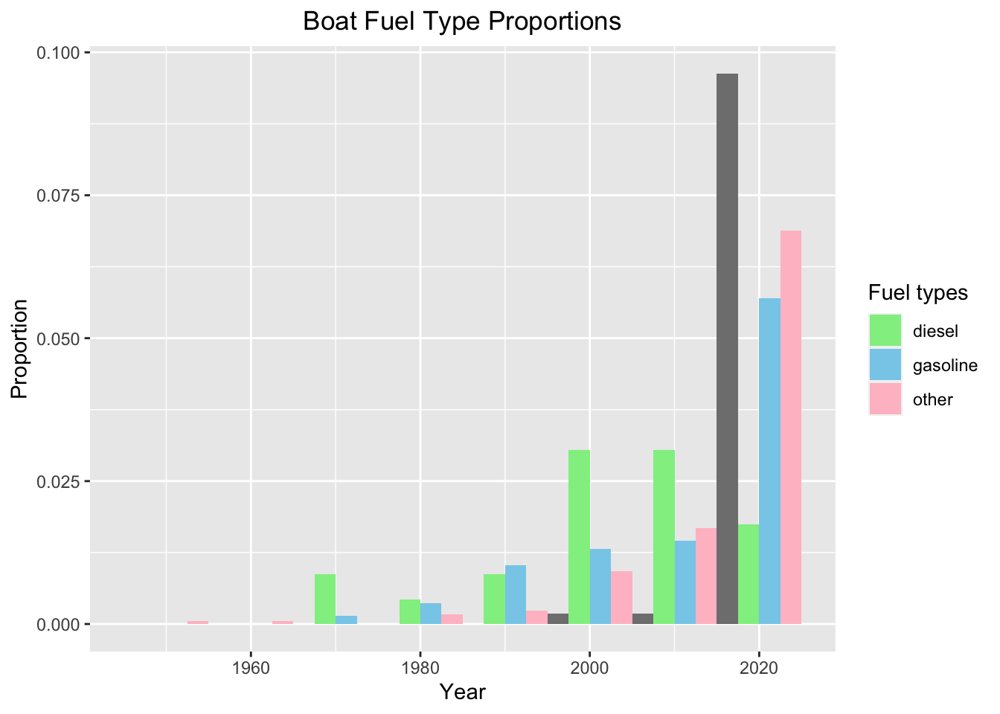
Answer: 1)
boats_len_summa <- c(min = min(boats$length_ft),
Q1 = quantile(boats$length_ft, 0.25),
median = median(boats$length_ft),
Q3 = quantile(boats$length_ft, 0.75),
max = max(boats$length_ft))
kable(boats_len_summa,col.names="Length (feet)",caption = "<b>The 5 number summary of boat length</b>")| Length (feet) | |
|---|---|
| min | 1.00 |
| Q1.25% | 18.58 |
| median | 21.50 |
| Q3.75% | 25.00 |
| max | 120.00 |
upper.fence<-25+1.5*(25-18.58)
upper.fence[1] 34.63lower.fence<- 18.58-1.5*(25-18.58)
lower.fence[1] 8.95upper.filtered.boats <- boats%>%
filter(length_ft>upper.fence)
upper.filtered.boats %>%
group_by(fuelType) %>%
summarize(n = n()) %>%
spread(fuelType, n)# A tibble: 1 × 3
diesel gasoline other
<int> <int> <int>
1 20 17 5lower.filtered.boats <- boats%>%
filter(length_ft<lower.fence)
lower.filtered.boats %>%
group_by(fuelType) %>%
summarize(n = n()) %>%
spread(fuelType, n)# A tibble: 1 × 2
gasoline other
<int> <int>
1 2 8According to the tables, there are 42 outliers with sizes larger than usual and 10 outliers with sizes smaller than usual. They are not outliers caused by wrongful measurements or chance, thus cannot be neglected.
2)
ggplot(boats,aes(x=fuelType, y=length_ft))+geom_boxplot()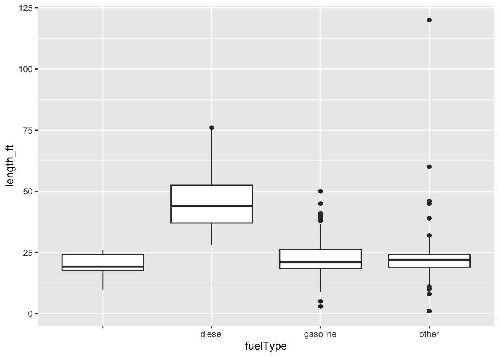
We can see from the tables that diesel boats are generally larger in size.
For boats under 20 feet, a rough rule of thumb is that the maximum weight capacity in kilograms of a boat is approximately the length in feet times the width (or beam) of the boat times 5. In a 2006 study of Americans, the average weight was approximately 70 kilos with a standard deviation of 11 kilos.
Answer: 1) sd=21.27kg, mean=73.16kg,
f(x)=e^{[-(x-73.16)^2]/109981}/88.78
Data comes from adults in the CDC’s 2015-16 NHANES survey. Weights were measured at a mobile examination center (MEC).
2)
| ID | Length (ft) | Beam (ft) |
|---|---|---|
| 6842735 | 9.83 | 4.33 |
| 7055543 | 9.83 | 4.33 |
| 6219877 | 3 | 1 |
| 7041942 | 18.67 | 7.83 |
| 6796269 | 18.67 | 7.83 |
3)
| -0.295 | -1.32 | 1.03 | |
|---|---|---|---|
| ID | 6219877 | 6842735 | 7041942 |
| ID | 7055543 | 6796269 |
4) The passengers each weigh: 73.16-2*21.27=30.62, 73.16-21.27=51.89, 73.16, 7316+21.27=94.43, 73.16+2*21.27=115.7 (kg)
Maximum weight capacity: Length*beam*5
Thus, for the boats with Z scores -0.295, -1.32, 1.03，the weight capacity is: 212.82kg, 15kg, 730.93kg.
| -2 | -1 | 0 | 1 | 2 | |
|---|---|---|---|---|---|
| 6219877 | 0 | 0 | 0 | 0 | 0 |
| 6842735/7055543 | 7 | 4 | 3 | 2 | 2 |
| 7041942/6796269 | 23 | 13 | 9 | 7 | 6 |
Were I a boat maker, the cutoff capacity should be calculated using people with weight Z score +1. +2 is uneccesary because it’s very rare and the cost of seat would be high. 0 is not as good as +1 because it’s merely 50% possibility that the total weight of full-loaded passengers will surpass the weight capacity.
5)
6219877: Two passengers, Z: <-2
6842735/7055543: Two passengers, Z: +1
7041942/6796269: Two passengers, Z: >+2
6219877 is a powered inflatable boat, while 7041942/6796269 are wooden boats. The materials might influenced their passenger capacities.
Data from Boats.com
Answer:
1)
ggplot(boats, aes(x=length_ft, y=price))+geom_point()+geom_smooth(method="lm", se=FALSE,color="blue")+geom_text(data=boats %>% filter(length_ft > 50),aes(label=id), vjust=0.5, color="red")`geom_smooth()` using formula = 'y ~ x'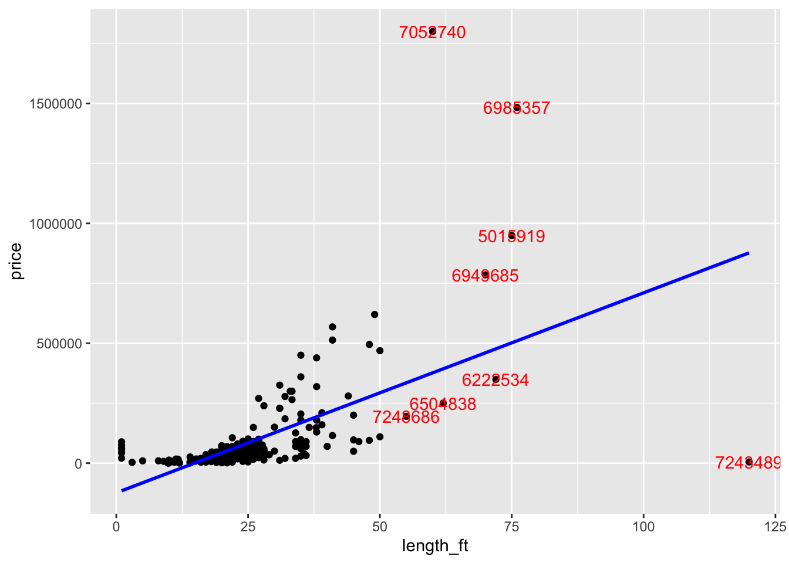
There’s no clear pattern. Generally, the larger the length is, the more expensive the price is. Hoever, price is an essential factor influencing the price. The outliers shouldn’t be excluded directly. They are not generated by false measurements or by chance. We can decide to exclude or include them according to the requirements of our statistic analysis.
2)
boat.filter<-boats%>%
filter(price<100000)
ggplot(boat.filter, aes(x=length_ft, y=price))+geom_point()+geom_smooth(method="lm", se=FALSE,color="blue")`geom_smooth()` using formula = 'y ~ x'
The correlation can be 0.75, it is quite strong. We can communicate with the client about the profit for making and selling the boats.
3)
boat.filter<-boats%>%
filter(price<100000)
ggplot(boat.filter, aes(x=length_ft, y=price, color=condition))+geom_point()+geom_smooth(method="lm", se=FALSE,color="blue")`geom_smooth()` using formula = 'y ~ x'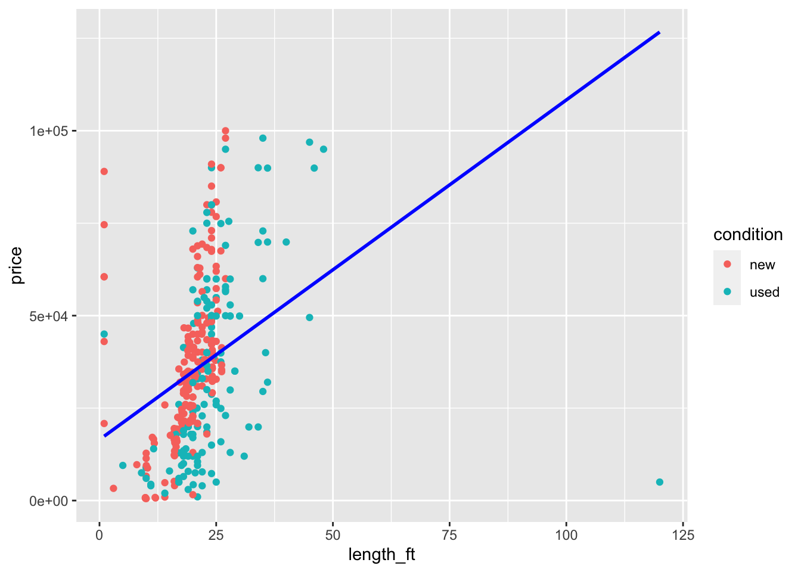
Yes. Used boats distibute widely in size and are much cheaper than new ones.
Answer:
1) The first line chart depicted the relationship between general boat size (boat length times boat beam) and boat price. Generally, the larger the size of the boat is, the more expensive the boat is. Of course, it’s apparent to see that boat size does not decides on boat price.
The second box chart compared the price of boats per square meter of general boat size with different fuel types. Generally, diesel boats are generally more expensive than boats using other types of fuels while gasoline boats have more expensive outliers in price. It’s estimated that gasoline boats have diverse usages.
The third histogram shows that new boats are getting increasingly popular recently. Customers seem to care more about the sailing experience and the emotional value of buying a ship than just the price than before.
ggplot(boats,aes(x=length_ft*beam_ft,y=price))+geom_line()Warning: Removed 140 rows containing missing values (`geom_line()`).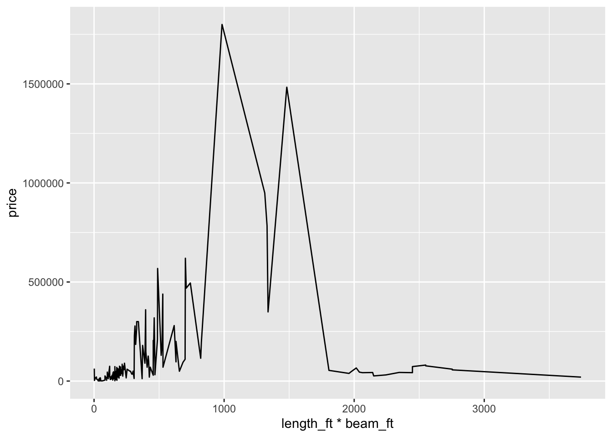
boat.filter<-boats%>%
filter(price/(length_ft*beam_ft)<10000)
ggplot(boat.filter,aes(x=fuelType, y=price/(length_ft*beam_ft)))+geom_boxplot()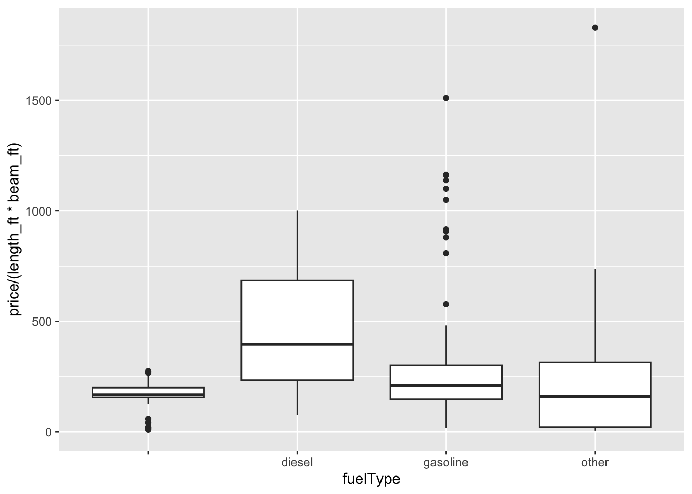
boats.condition<- boats %>%
group_by(condition)
ggplot(boats.condition,aes(x=year,fill=condition))+geom_histogram(aes(y=..density..),position="dodge",binwidth = 10)+labs(title = "Boat Fuel Type Proportions", x = "Year", y = "Proportion",fill="Condition")+theme(plot.title = element_text(hjust = 0.5))+scale_fill_manual(values = c("new" = "skyblue", "used" = "lightgreen", "other" = "pink"))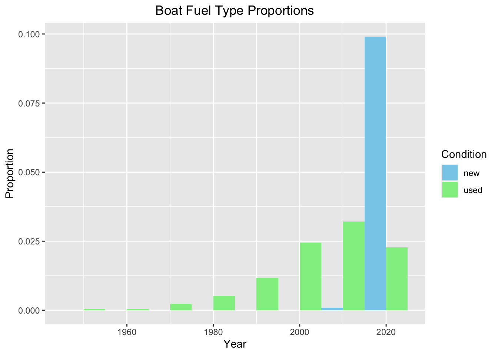
2) Finding 1: Most of the boats gather at price range of 100,000 USD, while there are outliers with extremely high price. It’s recommended for clients to fist select a price range according to the requirment on boat type and then look through a detail.
Finding 2: Diesel engines are commonly used in large and expensive boats while gasoline boats have diverse sizes and prices. Also, gasoline boats are getting increasing popular in recent years. Unless there is a special need, the client is recommended to purchase gasoline boats.
Finding 3: If the client is looking for cheap boats, he or she may prioritise second-hand ones. They are cheaper in price and its easy to obtain user experience and experiments on using and mantianience from the previous owner.
3) First, gasoline boats can earn more money than diesel ones unless our business is targeted at realm where diesel boats are favoured. Second, we can offer a second-hand boat trading services while stick to manufacturing new boats since new ones are more popular than before. Third, we can try to get some special large orders, these orders of boats may be unusually expensive, and at the same time make more money than ordinary orders.
4) Q1-Q7 failt to recognize the influence of size of the boats on the boat price. For instance, when comparing prices of different fuel types, we fail to be aware that diesel are usually used in larger boats which are more expensive. Thus, the price difference between diesel and gasoline boats are overplayed.